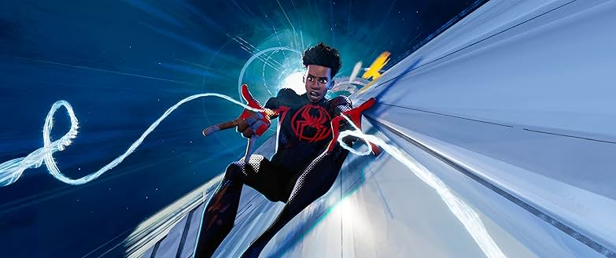
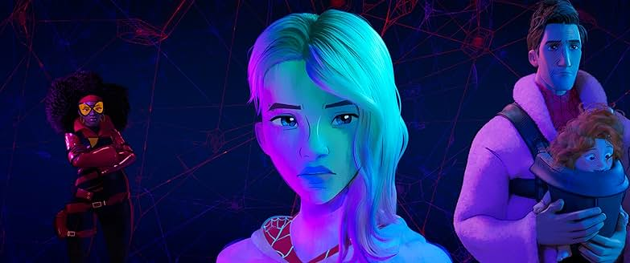
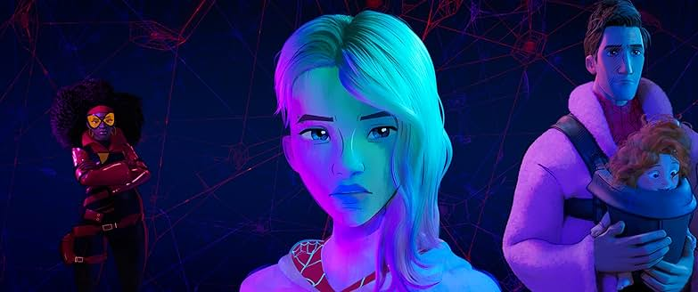
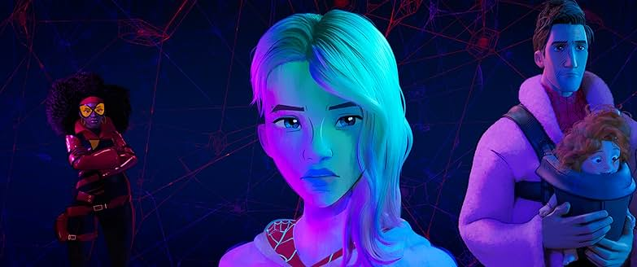

Avaliação: 8,5/10 ⭐
Análise
Homem-Aranha no Aranhaverso é uma animação inovadora da Sony Pictures que reinventa o universo do herói aracnídeo com estilo, emoção e muita criatividade. A trama acompanha Miles Morales, um adolescente do Brooklyn que, após ser picado por uma aranha radioativa, descobre que não está sozinho: vários "Homens-Aranha" de diferentes dimensões se unem para salvar o multiverso. Com uma estética visual arrojada que mistura quadrinhos, grafite e animação 3D, o filme se destaca pela originalidade e pela forma como abraça a diversidade de personagens. A narrativa é ágil, divertida e emocionante, equilibrando ação e temas como identidade, responsabilidade e amadurecimento.

 

